01 · Exhibitions · Riyadh, Saudi Arabia · 2026
The audience bet that became a stage signing
Magnaite × FFCC KSA 2026 — a specific read on who would be in the room, built into a booth, and closed on stage.
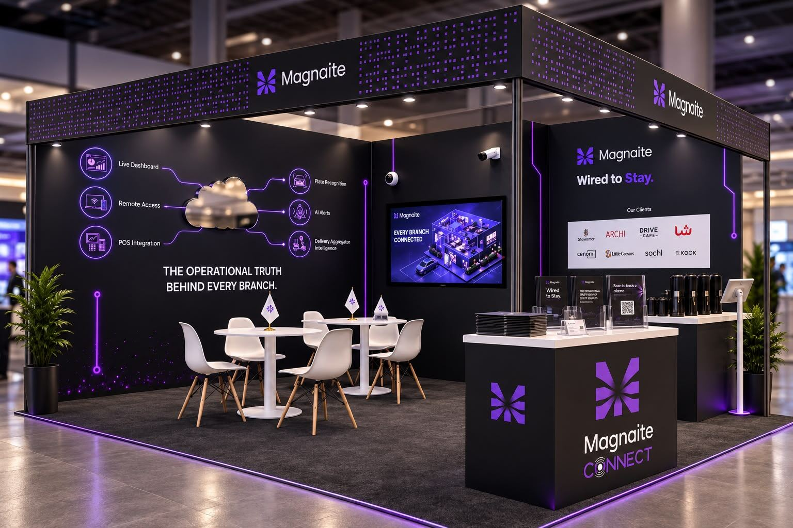
The concept render the booth was built from.
The thesis
I recommended Magnaite go into FFCC KSA 2026 on one read of the room: it would be full of multi-branch F&B owners carrying a cost they don't have a name for — one slow second, at the counter, at the drive-thru window. Not a general audience. That specific owner, in that specific pain, standing in one building for two days.
That's the bet the whole participation was built on.
The build
I designed the booth around proving the cost, not describing the product. The layout, the cloud-mirror install, the on-screen content, the brochure, the branded giveaways — built solo, concept through installation. No production team between the render and the room.
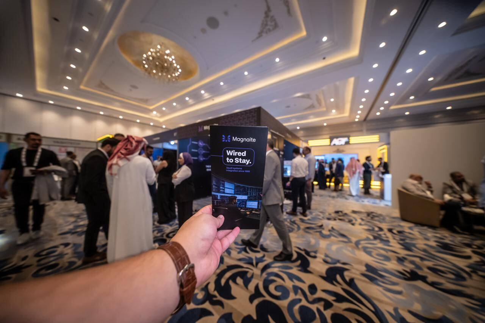
The floor
FFCC KSA 2026 drew 2,000+ visitors over the event. Our booth registered 600+ of them — and 70% of that traffic qualified as real leads, not just footfall. That ratio is the number I was actually betting on: not how many people walked past, but how many of them were the right owner, carrying the right problem.
I ran the booth myself for the full event — demos, conversations, the follow-through that turns a registration into a lead worth calling.
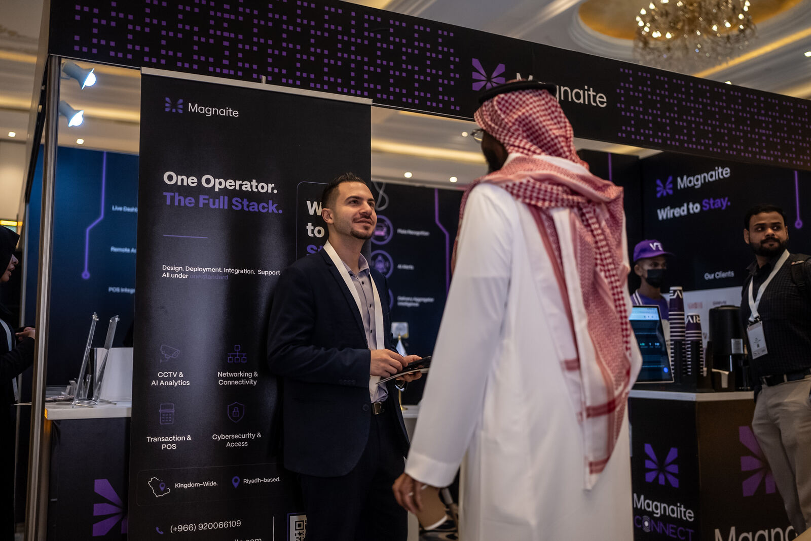
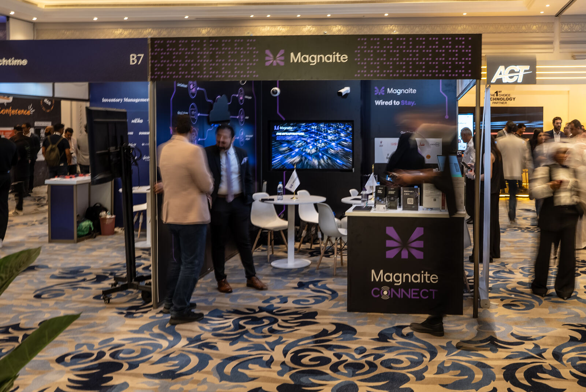
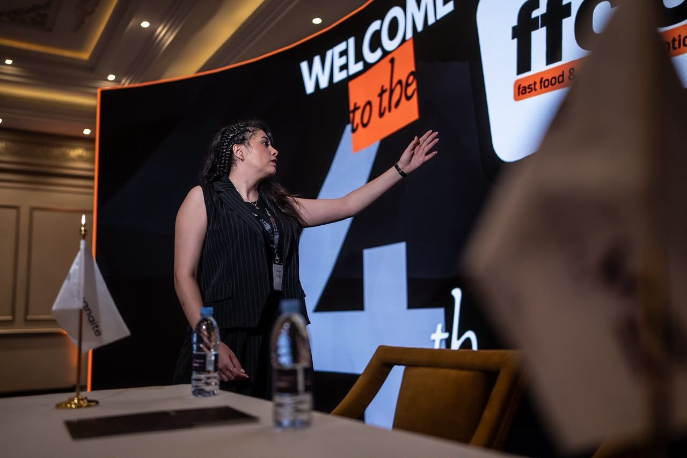
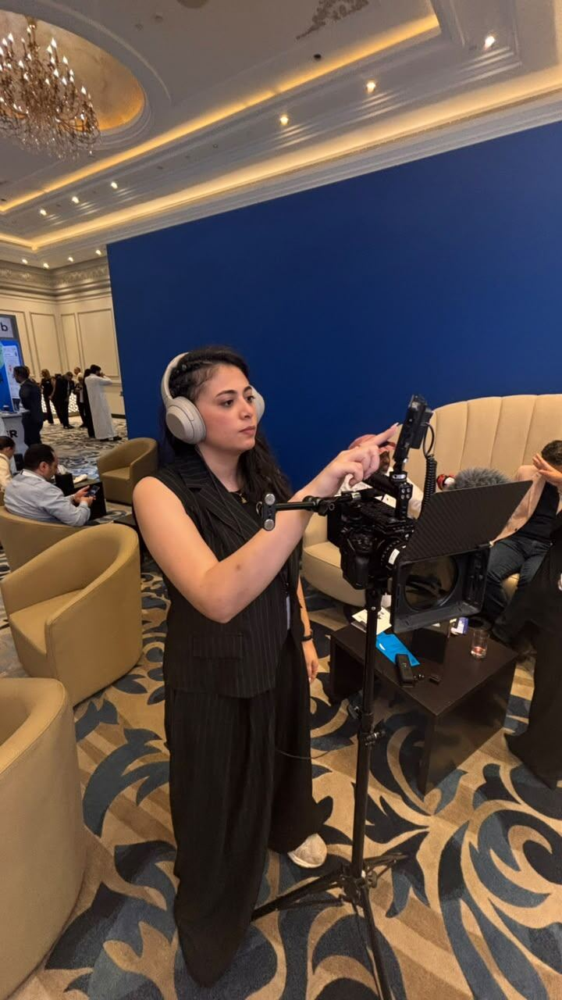
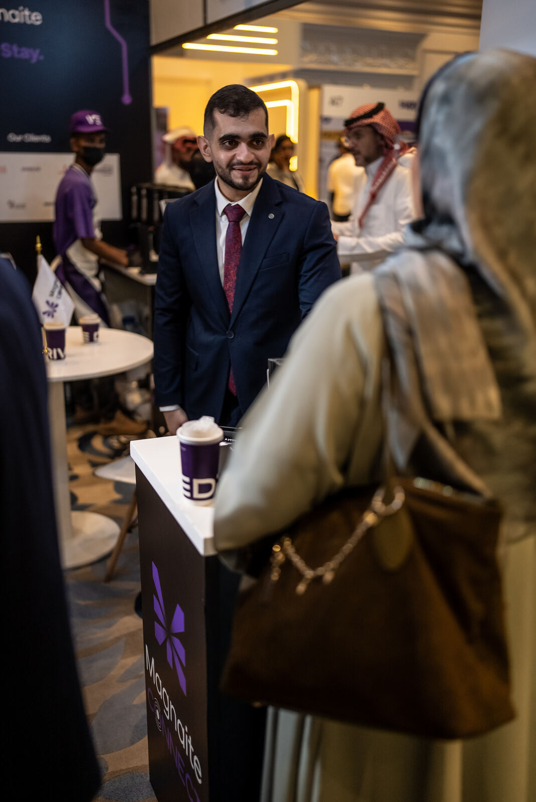
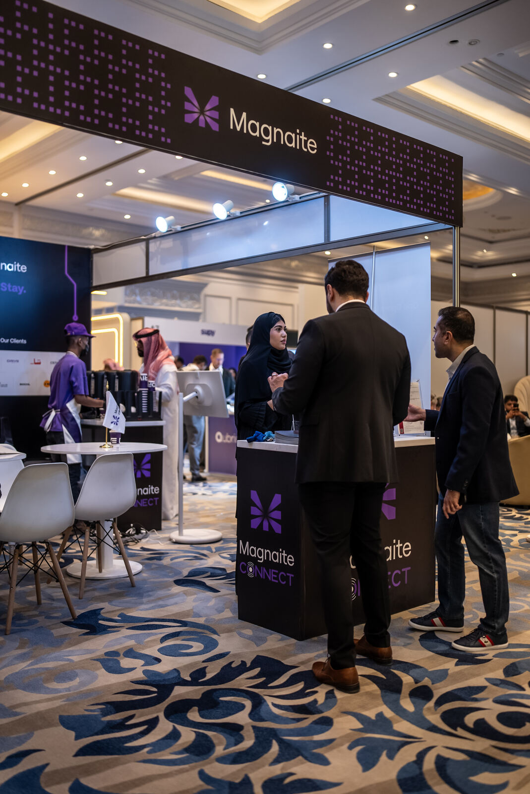
The event recap, cut for socials.
The close
FFCC ended with Magnaite signing Drive Coffee on stage — systems integration across Drive Coffee's branches, Kingdom-wide. The audience thesis held all the way through: the room I said would be there, was there, and it signed.
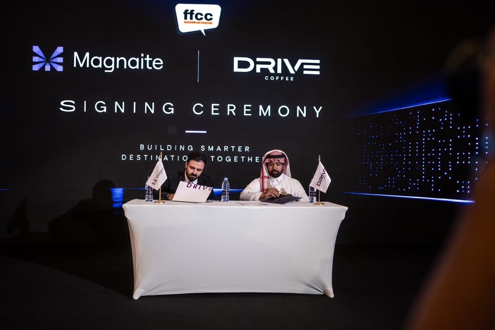
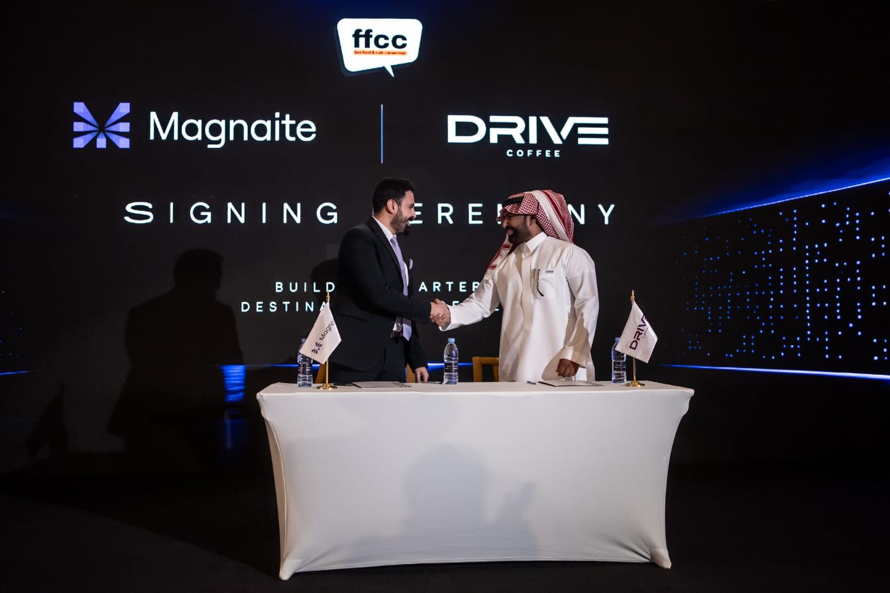
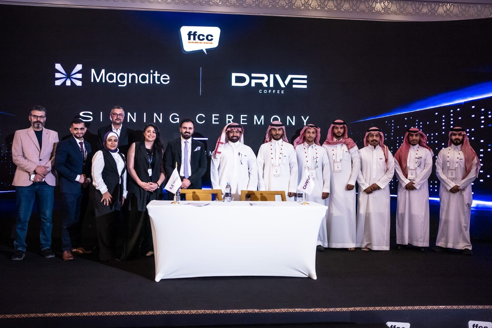
Also within Magnaite
Zero to full presence, in one quarter
Website, SEO foundations, and a social presence built from a single LinkedIn page to seven active platforms — in one quarter.
The starting point
Before this sprint, Magnaite had one channel — a LinkedIn page with around 200 followers. No Instagram, Facebook, TikTok, YouTube, X, Snapchat, or Pinterest. No content calendar, no website built for search, nothing running.
The strategy
Instead of posting one asset five ways, I built a platform-specific approach — each channel got its own language and register, not a resized version of the same post. Polished, English, case-study-style content ran on LinkedIn and Instagram. Faster, Arabic-first, native-feeling content ran on X and TikTok. Organic content and paid distribution across Meta, Google, and LinkedIn Ads ran alongside each other from the start, not one after the other.
One clue the split was right: a spontaneous, unscripted video I shot on the event floor outperformed the professionally produced pieces — on TikTok specifically. That platform's audience wanted something rawer, not a shorter LinkedIn post. The website itself, built from scratch alongside this sprint, gave the SEO work a real foundation to build on, rather than optimizing a site that didn't exist yet.
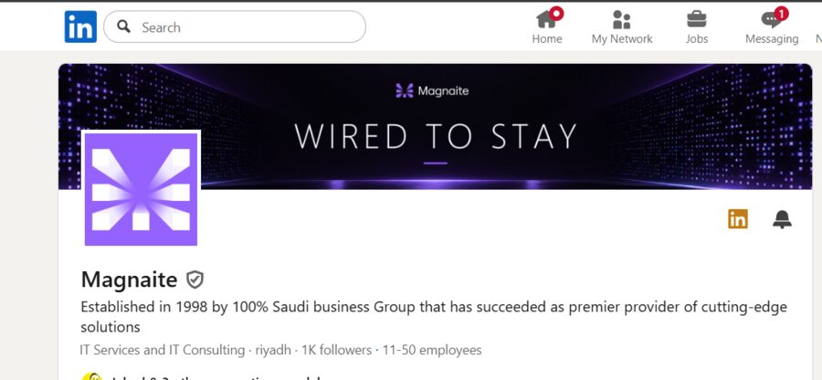
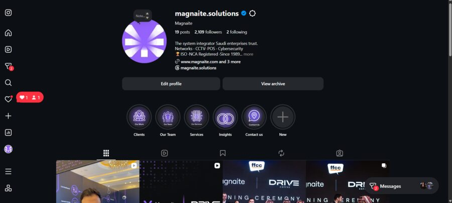
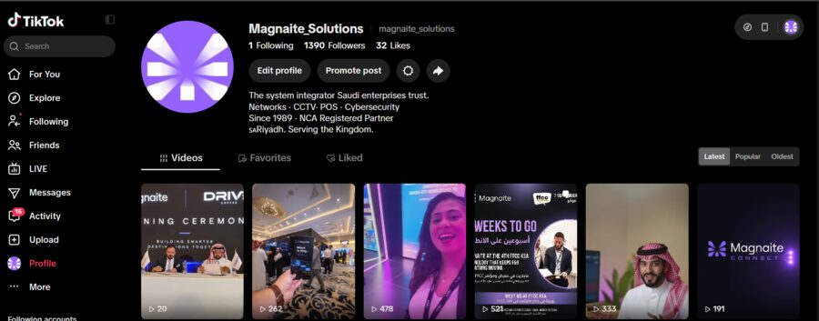
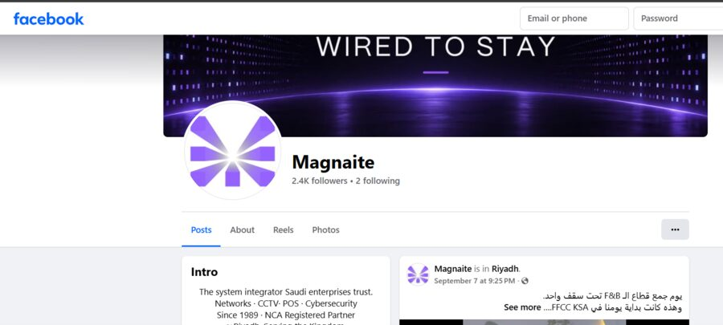
Screenshots from the live accounts, one quarter in.
See the real posts, on the Services page